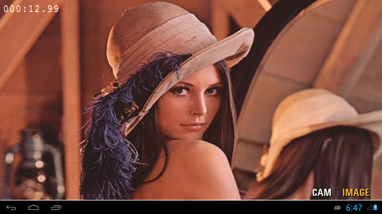
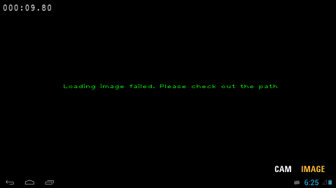
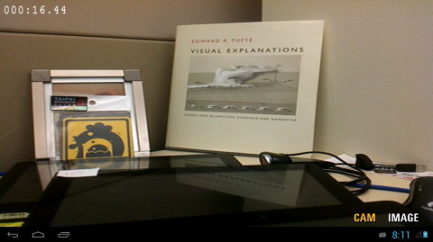
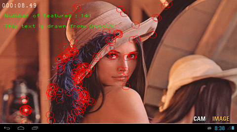
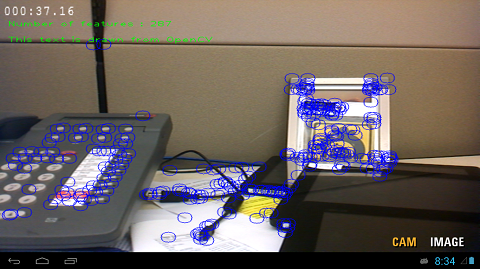
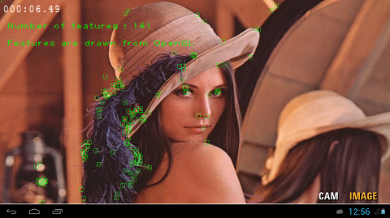
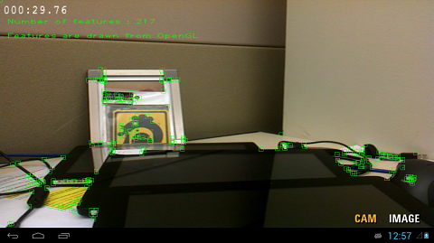

In this tutorial we show how to implement image processing and computer vision algorithms in Android using the OpenCV library. We show how to load an input image from an SD card, and also how to grab video frames from the Android camera by only using OpenCV native C++ code. We then apply a simple feature detector for each input frame, and display the results on the screen using both OpenCV and OpenGL ES for rendering lines and text.
This example, called SimpleImageOpenCV, is based on the OpenGL ES example previously presented. The complete project can be found in /tutorials/SimpleImageOpenCV_Complete/.
The basic functionalities of the example include:
- loading an image from an SD card using OpenCV’s highgui functions,
- capturing video frames from a camera using OpenCV’s cv::VideoCapture class, and
- applying feature detection to the image and video frames using cv::FastFeatureDetector class.
We start by explaining how to set up the OpenCV library, then show how to implement an image processing program using OpenCV step by step. To start from the OpenGL ES example, follow the instructions for importing a project into Eclipse to import the starting point for this example (/tutorials/SimpleImageOpenCV), which is identical to the OpenGL ES example SimpleImageDisplayGL.
Set up OpenCV:
Open Android.mk and add the highlighted lines:
LOCAL_PATH := $(call my-dir)
include $(CLEAR_VARS)
OPENCV_CAMERA_MODULES := on
OPENCV_LIB_TYPE := STATIC
# Generic OpenCV.mk
#include $(NVPACK_PATH)/OpenCV-2.4.5-Tegra-sdk/sdk/native/jni/OpenCV.mk
# Tegra optimized OpenCV.mk
include $(NVPACK_PATH)/OpenCV-2.4.5-Tegra-sdk/sdk/native/jni/OpenCV-tegra3.mk
The OPENCV_CAMERA_MODULES adds the camera libraries to the build process; if you don’t need to use the camera you can set this option to off. OPENCV_LIB_TYPE allows us to choose between static and shared libraries. For now, we use static linkage. We finally include OpenCV-tegra3.mk which defines the flags, paths and libraries that are needed to build an application with OpenCV optimized for Tegra 3. For other devices you can use OpenCV.mk instead.
Note
It is possible to link OpenCV either as a shared or a statically linked library. Here we use static linking as that is easier for a fully native (C++) project.
Specify the name of this module :
LOCAL_MODULE := SimpleImageOpenCV
The OpenCV*.mk file will initialize LOCAL_LDLIBS and LOCAL_STATITC_LIBRARIES, for this reason we need to append to these variables using the += operator instead of redefining them with the := notation. Modify the following lines replacing the := with the += operator:
LOCAL_LDLIBS += -lc -lm -llog -landroid -ldl -lGLESv2 -lEGL
LOCAL_STATIC_LIBRARIES += nv_and_util nv_egl_util nv_bitfont nv_math nv_glesutil nv_hhdds nv_log nv_shader nv_file nv_thread
You can find more details at How to build an Android application, which uses OpenCV.
Modify the Manifest file:
Open the AndroidManifest.xml file by clicking AndroidManifest.xml in Project Explorer. Choose an AndroidManifest.xml XML tab if the XML is not shown. Then, we add the followings (highlights).
<manifest xmlns:android="http://schemas.android.com/apk/res/android"
package="com.nvidia.tutorial"
android:versionCode="1"
android:versionName="1.0">
<uses-sdk android:minSdkVersion="14" android:targetSdkVersion="15" />
<uses-permission android:name="android.permission.WRITE_EXTERNAL_STORAGE" />
<uses-permission android:name="android.permission.CAMERA" />
<uses-feature android:name="android.hardware.camera" />
<uses-feature android:name="android.hardware.camera.autofocus" />
<uses-feature android:name="android.hardware.camera.front" android:required="false"/>
<uses-feature android:name="android.hardware.camera.front.autofocus" android:required="false"/>
<!-- We do not have Java code. Therefore android:hasCode is set to false. -->
<application android:label="@string/app_name" android:hasCode="false">
<!-- Our activity is the built-in NativeActivity framework class.
This will take care of integrating with our NDK code. -->
<activity android:name="android.app.NativeActivity"
android:label="@string/app_name"
android:configChanges="orientation|keyboard|keyboardHidden"
android:theme="@android:style/Theme.NoTitleBar.Fullscreen">
<!-- Tell NativeActivity the name of or .so -->
<meta-data android:name="android.app.lib_name"
android:value="SimpleImageOpenCV" />
<intent-filter>
<action android:name="android.intent.action.MAIN" />
<category android:name="android.intent.category.LAUNCHER" />
</intent-filter>
</activity>
</application>
</manifest>
We first add a permission to access an SD card to load and save images. We also add a permission to access cameras, and declare several camera features that we plan to use. Notice that we also changed android.app.lib_name from SimpleImageDisplay to SimpleImageOpenCV because we changed the library name in Android.mk in the previous step.
Make an OpenCV example source file:
Create new source and header files jni/OpenCV_native.cpp and jni/OpenCV_native.h, which we will use to implement our image processing with OpenCV. You can make them either by (1) directly creating empty files in the jni directory, or you can (2) Right-click the project > New > Source File (or Header file), and specify the name of files under the jni directory.
Then, let’s add some placeholders which we will soon fill in:
OpenCV_native.h
#ifndef OPENCV_NATIVE_H_
#define OPENCV_NATIVE_H_
#include <jni.h>
#include <opencv2/core/core.hpp>
#include <opencv2/highgui/highgui.hpp>
#include <opencv2/imgproc/imgproc.hpp>
#include <opencv2/features2d/features2d.hpp>
#include <opencv2/video/video.hpp>
#include <vector>
class COpenCVSample
{
public:
COpenCVSample()
{
}
~COpenCVSample()
{
}
// Load an image and apply any algorithm on the image and return the result image
cv::Mat runLoadCVImg();
// Apply an algorithm on an input cv::Mat image
cv::Mat runOpenCVFeatureDetector( cv::Mat img );
// Return the blank opencv image with error msg
cv::Mat errorImage( std::string errmsg );
};
#endif /* OPENCV_NATIVE_H_ */
OpenCV_native.cpp
#include "OpenCV_native.h"
cv::Mat COpenCVSample::runLoadCVImg()
{
cv::Mat img;
// Do something to load an image and return it
return img;
}
cv::Mat COpenCVSample::runOpenCVFeatureDetector( cv::Mat img )
{
// Do something to detect features
return img;
}
cv::Mat COpenCVSample::errorImage( std::string errmsg )
{
cv::Mat img;
// Do something to draw an error message on an image and return it
return img;
}
We will call the above functions from Engine.cpp later on, and the texture for the display will be updated from cv::Mat images that are returned by these functions.
As Android.mk uses wildcards for the source files, we don’t need to add these files to the makefile.
Initialize the UI for the example:
In Engine::initUI() within Engine.cpp, we modify the highlighted lines to change the text on the buttons. The buttons will be used for calling functions to either grab video frames from the camera or load an image from SD card.
bool Engine::initUI()
{
// The UI might have been initialized already
if( mUiInitialized ) { return true; }
[...]
// UI Buttons
mUiButton[0] = NVBFTextAlloc();
NVBFTextSetFont( mUiButton[0], 2 ); // should look up by font file name.
NVBFTextSetSize( mUiButton[0], 48 );
NVBFTextSetColor( mUiButton[0], NV_PC_PREDEF_WHITE );
NVBFTextSetShadow( mUiButton[0], 5, NV_PC_PREDEF_BLACK );
NVBFTextSetString( mUiButton[0], NVBF_STYLESTR_BOLD "CAM" );
mUiButton[1] = NVBFTextAlloc();
NVBFTextSetFont( mUiButton[1], 2 ); // should look up by font file name.
NVBFTextSetSize( mUiButton[1], 48 );
NVBFTextSetColor( mUiButton[1], NV_PC_PREDEF_WHITE );
NVBFTextSetShadow( mUiButton[1], 5, NV_PC_PREDEF_BLACK );
NVBFTextSetString( mUiButton[1], NVBF_STYLESTR_BOLD "IMAGE" );
[...]
mUiInitialized = true;
return true;
}
Build and run the project:
Clean the project by Project > Clean, then build the project.
Once you run the project, you will see the NVIDIA logo and the new buttons on the screen.
Add a function to display an error message using OpenCV:
// Return the blank opencv image with error msg cv::Mat COpenCVSample::errorImage( std::string errmsg ) { // Make a black background image cv::Mat img = cv::Mat::zeros( 720, 1280, CV_8UC3 ); // Add message with cv::putText std::stringstream sterr; sterr << "Loading image failed. Please check out the path"; cv::putText( img, sterr.str(), cv::Point( img.cols / 2 - 200, img.rows / 2 ), cv::FONT_HERSHEY_PLAIN, 1, cv::Scalar( 0, 255, 0 ) ); // OpenCV uses BGR, but OpenGL ES uses RGB cv::Mat rgb_img( img ); cv::cvtColor( img, rgb_img, CV_BGR2RGB ); return rgb_img; }
Add functionality for loading an image from an SD card:
cv::Mat COpenCVSample::runLoadCVImg() { // Specify a path for the test image std::stringstream path; path << "/storage/sdcard0/DCIM/lena.jpg"; // you may have to modify this path! cv::Mat img = cv::imread( path.str() ); if( img.rows == 0 ) { // If the path was wrong, draw in error message into cv::Mat return errorImage( "Wrong image path!" ); } // Convert to RGB for OpenGL ES cv::Mat rgb_img( img ); cv::cvtColor( img, rgb_img, CV_BGR2RGB ); return rgb_img; }Because OpenCV uses BGR, while OpenGL ES uses RGB format, we have to convert the color space with cv::cvtColor(). Then, return the converted image buffer.
Display the loaded image:
#include "OpenCV_native.h" [...] class Engine { private: static const int FRAMES_TO_RENDER = 4; public: /** * The constructor saves a pointer to the engine and to the callback * functions in the Android app. It also initializes the nv_shader library. */ Engine( NvEGLUtil &egl, struct android_app *app ); [...] protected: [...] // Function for updating textures void updateCVTexture( GLuint imgTexture, cv::Mat img ); [...] // Variables for the UI NvUIRect mUiButtonZone[2]; void *mClockText; void *mUiPauseText; void *mUiButton[2]; int mHitButton; // Stores which of the two buttons is currently active // Variables for OpenCV COpenCVSample mCV; };
// Update a texture with OpenCV image (Mat) void Engine::updateCVTexture( GLuint imgTexture, cv::Mat img ) { // The images we get from the camera or read from opencv are byte aligned. glPixelStorei( GL_UNPACK_ALIGNMENT, 1); // Update the texture glBindTexture( GL_TEXTURE_2D, imgTexture ); glTexImage2D( GL_TEXTURE_2D, 0, GL_RGB, img.cols, img.rows, 0, GL_RGB, GL_UNSIGNED_BYTE, img.data ); glBindTexture( GL_TEXTURE_2D, 0 ); // Update the shader mRectShader[1]->setImageSize( img.cols, img.rows, RectShader::STORAGE_TOP_FIRST, RectShader::ASPECT_RATIO_KEEP); }In glTexImage2D, we set the image buffer as GL_RGB, and the type of the data as GL_UNSIGNED_BYTE. See the glTexImage2D reference for details on glPixelStorei and glTexImage2D.
int Engine::handleInput( AInputEvent * event ) { // We only handle motion events (touchscreen) and key (button/key) events int32_t eventType = AInputEvent_getType( event ); if( eventType == AINPUT_EVENT_TYPE_MOTION ) { [...] if( isActiveMode() ) { if( mUiButtonZone[0].inside( mx, my ) ) { mHitButton = 0; // ``CAM`` button calls a camera capture function here } else if( mUiButtonZone[1].inside( mx, my ) ) { mHitButton = 1; // ``IMAGE`` button calls a load image function, and // a function to update a texture here. updateCVTexture( mImgTexture, mCV.runLoadCVImg() ); } } [...] return 1; } [...] return 0; }
bool Engine::renderFrame( bool allocateIfNeeded ) { [...] // Set up viewport glViewport( ( GLint )0, ( GLint )0, ( GLsizei )( mEgl.getWidth() ), ( GLsizei )( mEgl.getHeight() ) ); // Clear buffers as necessary glClear( GL_COLOR_BUFFER_BIT | GL_DEPTH_BUFFER_BIT ); /* Do some rendering here */ // Based on the button that is selected choose the shader that should be used... mDrawRect->setShader( mRectShader[1].get() ); // ... and pass the texture to the shader. mDrawRect->draw( mImgTexture ); // Render the rendering bitfont text overlaid here. NVBFTextRenderPrep(); [...] // Swap the buffers, which indicates we're done with rendering this frame mEgl.swap(); return true; }
If the image was not loaded correctly you get an error message instead:
If the error message is shown, please make sure you’ve uploaded the image to the device, and that the path specified in the previous step (in COpenCVSample::runLoadCVImg()) is correct.
Add functionality to capture a video frame from the camera.
Note
The camera control from OpenCV is not fully supported on all devices. As of 06/10/2013 all Tegra 3 and Tegra 4 devices are supported (whether they are production devices or dev boards, such as Cardhu), with the exception of some devices based on Android 4.0.x, such as the HTC One X before upgrade to Android 4.1.x.
To date, the native OpenCV camera does not work on:
We first add an instance for the OpenCV video capturing class, cv::VideoCapture, and a flag for switching the display mode between video and the loaded image. In Engine.h, add the following lines:
[...]
// Variables for OpenCV
COpenCVSample mCV; // Class instance for OpenCV tutorial
// OpenCV native camera
cv::VideoCapture mCapture;
bool mUseCVCam;
[...]
Initialize and set up the cv::VideoCapture class in Engine::initUI() in Engine.cpp.
bool Engine::initUI()
{
if( mUiInitialized ) { return true; }
LOGD( "Initializing UI" );
[...]
mUiInitialized = true;
mUseCVCam = false;
// Open the OpenCV camera 0 for frontal and 1 for backward camera
mCapture.open( CV_CAP_ANDROID + 0 );
if( !mCapture.isOpened() )
{
LOGI( "CV: OpenCV camera was not opened correctly" );
}
else
{
LOGI( "CV: OpenCV camera was opened correctly" );
}
// set the properties of the OpenCV camera
mCapture.set( CV_CAP_PROP_AUTOGRAB, 1 );
mCapture.set( CV_CAP_PROP_FRAME_WIDTH, 640 );
mCapture.set( CV_CAP_PROP_FRAME_HEIGHT, 480 );
LOGI( "CV: OpenCV camera setup done" );
return true;
}
We chose the frontal camera, and set the frame resolution to 640 x 480.
Now, let’s write code for getting video frames and update the texture to display them.
bool Engine::renderFrame( bool allocateIfNeeded )
{
if( !mEgl.isReadyToRender( allocateIfNeeded ) )
{
return false;
}
[...]
// set up viewport
glViewport( ( GLint ) 0, ( GLint ) 0, ( GLsizei )( mEgl.getWidth() ), ( GLsizei )( mEgl.getHeight() ) );
// clear buffers as necessary
glClear( GL_COLOR_BUFFER_BIT | GL_DEPTH_BUFFER_BIT );
// Based on the button that is selected choose the shader that should be used...
mDrawRect->setShader( mRectShader[1].get() );
// ... and pass the texture to the shader.
mDrawRect->draw( mImgTexture );
// OpenCV Camera
if( mUseCVCam )
{
// grab the openCV camera:
if( !mCapture.grab() )
{
LOGI( "CV: cannot grab frame" );
mUseCVCam = false;
}
// retrieve the frame from the openCV camera:
cv::Mat frameimg;
if( !mCapture.retrieve( frameimg, CV_CAP_ANDROID_COLOR_FRAME_RGB ) )
{
LOGI( "CV:: cannot retrieve frame -- break" );
mUseCVCam = false;
}
// Bind the texture with the frameimg.
updateCVTexture( mImgTexture, frameimg );
frameimg.release();
}
[...]
// done rendering overlaid text.
NVBFTextRenderDone();
if( mForceRender > 0 ) { mForceRender--; }
mEgl.swap();
return true;
}
Then, we set the flag mUseCVCam to true in the message handling function (for the CAM button), and set the flag to false when another button (IMAGE) is clicked.
int Engine::handleInput( AInputEvent *event )
{
// We only handle motion events (touchscreen) and key (button/key) events
int32_t eventType = AInputEvent_getType( event );
if( eventType == AINPUT_EVENT_TYPE_MOTION )
{
[...]
if( isActiveMode() )
{
if( mUiButtonZone[0].inside( mx, my ) )
{
mHitButton = 0;
// ``CAM`` button calls a camera capture function here
mUseCVCam = true;
}
else if( mUiButtonZone[1].inside( mx, my ) )
{
mHitButton = 1;
mUseCVCam = false;
// ``IMAGE`` button calls a load image function, and
// a function to update a texture here.
updateCVTexture( mImgTexture, mCV.runLoadCVImg() );
}
}
[...]
}
[...]
}
Finally, release the capture device, cv::VideoCapture mCapture, in the destructor of the Engine class.
Engine::~Engine()
{
// Free the allocated BitFonts
NVBFTextFree( mUiButton[0] );
NVBFTextFree( mUiButton[1] );
NVBFTextFree( mUiPauseText );
NVBFTextFree( mClockText );
NVBFCleanup();
// Delete the texture
glDeleteTextures( 1, &mImgTexture );
// release capture device
mCapture.release();
}
Build the project again, and click the CAM button. Now the video frames captured from your device will be shown.

Apply a feature detector onto loaded image and video frames using OpenCV:
We now get back to OpenCV_native.cpp to fill the runOpenCVFeatureDetector(cv::Mat img) function.
cv::Mat COpenCVSample::runOpenCVFeatureDetector( cv::Mat img )
{
cv::Mat g_img( img.rows, img.cols, CV_8UC1 );
// convert BGR to Gray
cv::cvtColor( img, g_img, CV_BGR2GRAY );
// detect FAST features
std::vector<cv::KeyPoint> v;
cv::FastFeatureDetector detector( 50 );
detector.detect( g_img, v );
// Draw results
for( size_t i = 0; i < v.size(); i++ )
{
cv::circle( img, cv::Point( v[i].pt.x, v[i].pt.y ), 10, cv::Scalar( 0, 0, 255, 255 ) );
}
// Draw texts in opencv
std::stringstream st1;
st1 << "Number of features : " << v.size();
cv::putText( img, st1.str(), cv::Point( 10, 50 ), cv::FONT_HERSHEY_PLAIN, 1, cv::Scalar( 0, 255, 0 ) );
st1.str( std::string() );
st1 << "This text is drawn from OpenCV";
cv::putText( img, st1.str(), cv::Point( 10, 80 ), cv::FONT_HERSHEY_PLAIN, 1, cv::Scalar( 0, 255, 0 ) );
return img;
}
We first convert the input RGB file to a gray scale image to detect features. We then extract FAST features, and draw the features with cv::circle(). Then we also add some text using cv::putText().
We then add a line of code to apply feature detector to a loaded image.
cv::Mat COpenCVSample::runLoadCVImg()
{
// specifying a path for a testing image
std::stringstream path;
path << "/storage/sdcard0/DCIM/lena.jpg";
cv::Mat img = cv::imread( path.str() );
if( img.rows == 0 )
{
// If the path was wrong, display error message as a form of cv::Mat
return ErrorImage( "Wrong image path!" );
}
cv::Mat temp(img);
img = runOpenCVFeatureDetector(temp);
// Since opencv uses BGR, we have to convert it to RGB for opengl side
cv::Mat rgb_img( img );
cv::cvtColor( img, rgb_img, CV_BGR2RGB );
return rgb_img;
}
To apply the detector to video frames from the camera, we change the code in Engine::renderFrame(...) function in Engine.cpp.
bool Engine::renderFrame( bool allocateIfNeeded )
{
[...]
// OpenCV Camera
if( mUseCVCam )
{
// grab the openCV camera:
if( !mCapture.grab() )
{
LOGI( "CV: cannot grab frame" );
mUseCVCam = false;
}
// retrieve the frame from the openCV camera:
cv::Mat frameimg;
if( !mCapture.retrieve( frameimg, CV_CAP_ANDROID_COLOR_FRAME_RGB ) )
{
LOGI( "CV:: cannot retrieve frame -- break" );
mUseCVCam = false;
}
// Bind the texture with the frameimg.
updateCVTexture( mImgTexture, mCV.runOpenCVFeatureDetector(frameimg) );
frameimg.release();
}
[...]
return true;
}
We now build the project again, and run the application. By clicking the IMAGE and CAM buttons, you will see the following results.
 
In the previous section, we have drawn the feature points with OpenCV highgui functions, and updated the texture with the resulting image. Because we drew the result into the image rather than on the display, the visual quality of the drawings varies depending on the resolution ratios of the image and display. We now show how to draw line primitives with OpenGL. The primitives will be overlaid on top of the resulting (or input) image/frame at the display resolution.
This example, called SimpleImageOpenCV_GL, is based on OpenCV example (SimpleImageOpenCV) shown in the previous section. The complete project can be found in a directory, /tutorials/SimpleImageOpenCV_GL_Complete/.
Continue from the previous project, or import the SimpleImageOpenCV_GL sample project. In the beginning, the content of the project is identical to the SimpleImageOpenCV_GL_Complete sample.
The basic steps are the same as in the previous tutorial: Open Eclipse > Choose a workspace location > File > Import > Android > Existing Android Code Into Workspace > Browse a Root Directory /tutorials/SimpleImageOpenCV_GL. Then, convert the project to CDT.
Add a shader for displaying results from OpenCV.
// Vertex Shader : line.vert attribute vec2 aPos; // Position, in screen coordinates, passed as an attribute. uniform vec2 uViewMin; // Min x,y viewport values (bottom left viewport coordinates) uniform vec2 uViewDim; // x,y viewport dimensions uniform vec3 uColor; // Line color varying vec3 vColor; // Output color /* * This vertex shader maps the vertex coordinates to viewport coordinates in the * range specified by uViewMin and uViewDim */ void main() { // Convert to clip coordinates. gl_Position = vec4( uViewMin.x + aPos.x * uViewDim.x, uViewMin.y + aPos.y * uViewDim.y, 0.0, 1.0 ); // Pass the color vColor = uColor; }// Fragment Shader : line.frag precision mediump float; varying vec3 vColor; void main() { gl_FragColor = vec4( vColor, 1.0 ); }
// Variables for OpenCV COpenCVSample mCV; // Class instance for OpenCV tutorial // OpenCV native camera cv::VideoCapture mCapture; bool mUseCVCam; // OpenGL for OpenCV GLint mCVlineShader;
bool Engine::initUI() { [...] LOGI( "CV: OpenCV camera setup done" ); // Load shader mCVlineShader = nv_load_program( "line" ); return true; }
Add rendering functions for the shader.
[...] // Function for updating textures void updateCVTexture( GLuint imgTexture, cv::Mat img ); // Rendering results from OpenCV void renderOpenCVResults( int shader, std::vector<cv::Point2f> pts, cv::Size imgsize ); // Draw a line primitive void drawLine2D( int shaderLine, GLfloat st[], GLfloat dt[], GLfloat color[] ); // Draw a square using line primitives void draw2DSquare( int shaderLine, GLfloat center[], GLfloat color[], GLfloat size, GLfloat aspectf ); [...]
Modify OpenCV_native.h and OpenCV_native.cpp.
class COpenCVSample { public: COpenCVSample() { } ~COpenCVSample() { } // Variables for OpenGL display std::vector<cv::Point2f> mFeature; cv::Size mImgSize; [...] };
cv::Mat COpenCVSample::runOpenCVFeatureDetector( cv::Mat img ) { cv::Mat g_img( img.rows, img.cols, CV_8UC1 ); // convert BGR to Gray cv::cvtColor( img, g_img, CV_BGR2GRAY ); // detect FAST features std::vector<cv::KeyPoint> v; cv::FastFeatureDetector detector( 50 ); detector.detect( g_img, v ); // Draw results (using OpenCV) /* for( size_t i = 0; i < v.size(); i++ ) { cv::circle( img, cv::Point( v[i].pt.x, v[i].pt.y ), 10, cv::Scalar( 0, 0, 255, 255 ) ); } */ // set member variables of detected featureS for OpenGL draw mFeature.clear(); mFeature.resize( v.size() ); mImgSize.width = img.cols; mImgSize.height = img.rows; for( size_t i = 0; i < v.size(); i++ ) { cv::Point2f pt; pt.x = v[i].pt.x; pt.y = v[i].pt.y; mFeature.push_back( pt ); } [...] return img; }
Render the feature data received from OpenCV_native.cpp in Engine.cpp.
Here is a new rendering function that binds a shader and draws features from OpenCV. To render the features at the corresponding image locations, we copy the uniforms from the rectangle vertex shader into the line vertex shader. We then convert each feature’s coordinates to normalized image coordinates in the range [0,1] and call draw2DSquare to draw a square around it. Let’s add the implementation of Engine::renderOpenCVResults in the file Engine.cpp
void Engine::renderOpenCVResults( int shader, std::vector<cv::Point2f> pts, cv::Size imgsize )
{
GLfloat origin[2], dim[2], sign;
glLineWidth( 1.0f );
glUseProgram( shader );
mRectShader[1]->getOrigUniform( origin );
mRectShader[1]->getDimUniform( dim );
// Set up the uniforms. Flip the vertical axis if the image row 0 is the top row.
glUniform2f( glGetUniformLocation( shader, "uViewMin"), origin[0], origin[1] );
glUniform2f( glGetUniformLocation( shader, "uViewDim"), dim[0], dim[1] );
// set color for the line primitive
GLfloat colorc[3] = { 0.0, 1.0, 0.0 };
GLfloat fpts[2];
for( int i = 0; i < pts.size(); i++ )
{
fpts[0] = pts[i].x / imgsize.width;
fpts[1] = pts[i].y / imgsize.height;
draw2DSquare( shader, fpts, colorc, 4.0 / imgsize.width , 1.0f );
}
}
The following functions are used to draw features by overlaying squares on top of video frames, and their implementation should be added to Engine.cpp:
void Engine::draw2DSquare( int shaderLine, GLfloat center[], GLfloat color[], GLfloat size, GLfloat aspectf ) { GLfloat st[2], dt[2]; GLfloat half_w = size * 0.5f; GLfloat half_h = size * 0.5f * aspectf; st[0] = center[0] - half_w; st[1] = center[1] - half_h; dt[0] = center[0] + half_w; dt[1] = center[1] - half_h; drawLine2D( shaderLine, st, dt, color ); st[0] = center[0] + half_w; st[1] = center[1] - half_h; dt[0] = center[0] + half_w; dt[1] = center[1] + half_h; drawLine2D( shaderLine, st, dt, color ); st[0] = center[0] + half_w; st[1] = center[1] + half_h; dt[0] = center[0] - half_w; dt[1] = center[1] + half_h; drawLine2D( shaderLine, st, dt, color ); st[0] = center[0] - half_w; st[1] = center[1] + half_h; dt[0] = center[0] - half_w; dt[1] = center[1] - half_h; drawLine2D( shaderLine, st, dt, color ); }void Engine::drawLine2D( int shaderLine, GLfloat st[], GLfloat dt[], GLfloat color[] ) { GLfloat lineVertices[2 * 2]; lineVertices[0] = st[0]; lineVertices[1] = st[1]; lineVertices[2] = dt[0]; lineVertices[3] = dt[1]; glVertexAttribPointer( glGetAttribLocation( shaderLine, "aPos" ), 2, // each vertex is two floats GL_FLOAT, GL_FALSE, 0, lineVertices ); glEnableVertexAttribArray( glGetAttribLocation( shaderLine, "aPos" ) ); glUniform3f( glGetUniformLocation( shaderLine, "uColor" ), color[0], color[1], color[2] ); glDrawArrays( GL_LINE_STRIP, 0, 2 ); }
bool Engine::renderFrame( bool allocateIfNeeded ) { if( !mEgl.isReadyToRender( allocateIfNeeded ) ) { return false; } [...] // clear buffers as necessary glClear( GL_COLOR_BUFFER_BIT | GL_DEPTH_BUFFER_BIT ); // Based on the button that is selected choose the shader that should be used... mDrawRect->setShader( mRectShader[1].get() ); // ... and pass the texture to the shader. mDrawRect->draw( mImgTexture ); // OpenCV Camera if( mUseCVCam ) { [...] } // Render features with OpenGL if ( mCV.mFeature.size() > 0 ) { renderOpenCVResults( mCVlineShader, mCV.mFeature, mCV.mImgSize ); } [...] mEgl.swap(); return true; }
Build the project, and run the application. Clicking IMAGE and CAM buttons will show the following results, which is drawn by a shader.

Click CAM
The green squares, representing feature points, are drawn by OpenGL.
We showed under Debugging your native application that we can debug native applications by doing two steps: setting NDK_DEBUG=1 as a build option, doing a clean build, and then selecting Debug as > Android Native Application in Eclipse to launch the debug enabled application on the device. This should work fine with up-to-date tools. If you are working with older versions of the ADT tools for Eclipse, while debugging SimpleImageOpenCV_GL you may get the following (or similar) error:
[2012-11-28 12:06:57 - SimpleImageOpenCV_GL_Complete] Unknown Application ABI:
[2012-11-28 12:06:57 - SimpleImageOpenCV_GL_Complete] Android
[2012-11-28 12:06:57 - SimpleImageOpenCV_GL_Complete] Unknown Application ABI:
[2012-11-28 12:06:57 - SimpleImageOpenCV_GL_Complete] NDK:
[...]
[2012-11-28 12:06:57 - SimpleImageOpenCV_GL_Complete] Unable to detect application ABI's
This is a known issue with the Android ADT tools for Eclipse. The debug launch calls make with a DUMP_ target that prints out the TARGET_ABI. The problem is, this launch ignores any environment variable previously set under C++ > Build > Environment. To work around this issue, edit Android.mk with a conditional around the include OpenCV-tegra3.mk and around any $(call import-module, ...), as shown below. Your build will succeed and you will also be able to launch the debugger:
LOCAL_PATH := $(call my-dir)
include $(CLEAR_VARS)
OPENCV_CAMERA_MODULES := on
OPENCV_INSTALL_MODULES := on
OPENCV_LIB_TYPE := STATIC
ifeq (,$(DUMP_VAR))
include $(NVPACK_PATH)/OpenCV-2.4.2-Tegra-sdk/sdk/native/jni/OpenCV-tegra3.mk
endif
LOCAL_MODULE := SimpleImageDisplayCVGL
MY_PREFIX := $(LOCAL_PATH)
MY_SOURCES := $(wildcard $(LOCAL_PATH)/*.cpp)
MY_SOURCES += $(wildcard $(LOCAL_PATH)/*.c)
LOCAL_SRC_FILES += $(MY_SOURCES:$(MY_PREFIX)%=%)
LOCAL_LDLIBS += -lc -lm -llog -landroid -ldl -lGLESv2 -lEGL
LOCAL_STATIC_LIBRARIES += nv_and_util nv_egl_util nv_bitfont nv_math nv_glesutil nv_hhdds nv_log nv_shader nv_file nv_thread
LOCAL_CFLAGS += -std=gnu++0x
include $(BUILD_SHARED_LIBRARY)
ifeq (,$(DUMP_VAR))
# Add the folder with the NVIDIA helper
$(call import-add-path, $(NVPACK_PATH)/TDK_Samples/tegra_android_native_samples_v10p10/libs/jni)
# Import the modules from the NVIDIA helper
$(call import-module, nv_and_util)
$(call import-module, nv_egl_util)
$(call import-module, nv_bitfont)
$(call import-module, nv_math)
$(call import-module, nv_glesutil)
$(call import-module, nv_hhdds)
$(call import-module, nv_log)
$(call import-module, nv_shader)
$(call import-module, nv_file)
$(call import-module, nv_thread)
endif
In this section, we have provided information on OpenCV for Android/Tegra devices, and introduced some examples to build an OpenCV-based application on top of native OpenGLE ES example. Below are some additional pointers that include more OpenCV samples in OpenCV4Android (or OpenCV4Tegra), and other OpenCV/TADP documents.
{kind=link}